ARTWORK HANDOFF · 224
Selected looks, baked assets
Your uncovered ponytail and red Pulse-cap selections are saved as separate static assets. The fixtures use developed glasses, HOT details and hoodies. Rotate, zoom and inspect the actual exported components below.
The Blender artwork defines the appearance. Browser lighting and the glTF material conversion have visible differences; this page does not certify native-app parity or phone performance. Hair, cap and accessory fitting is already baked.
Exact209 references
The retained reference set has both builds in Fair and Brown, with identical framing at120×120 and512×512. These files preserve the original approved face/stubble and reference composite.
Saved source and export reviews
Native Blender source, all-angle review, with actual GLB round-trip comparisons. Source and imported glTF keep separate material/lighting evidence.
Feminine · Selected ponytail
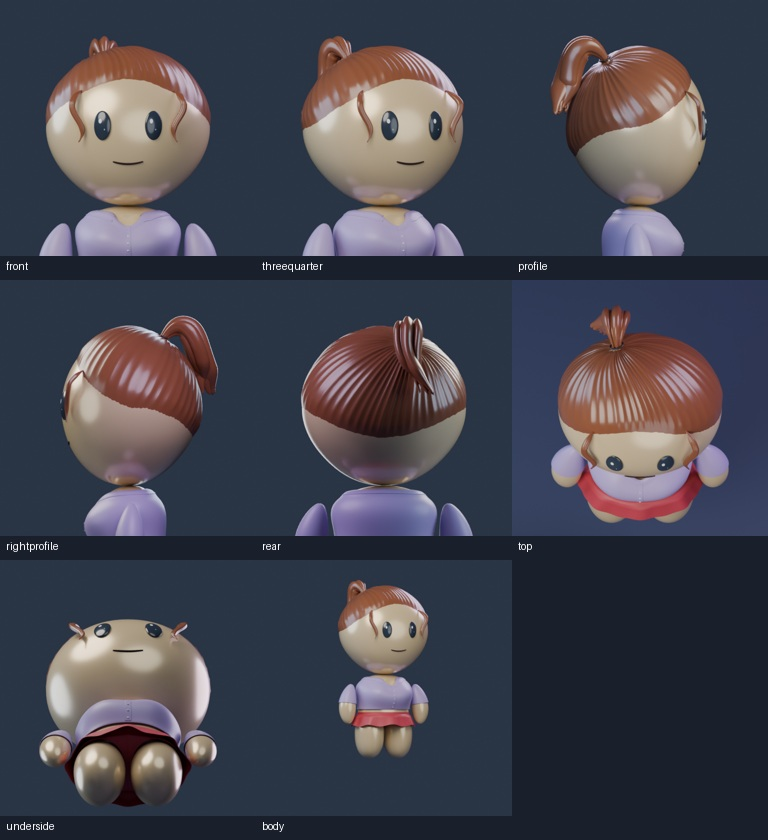
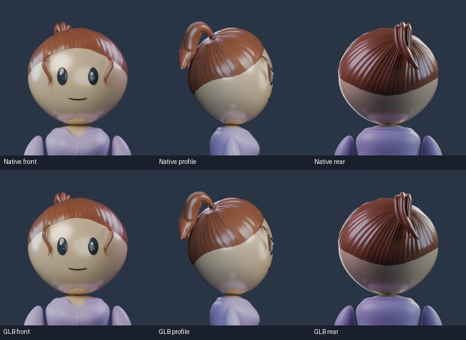
Feminine · Selected red cap
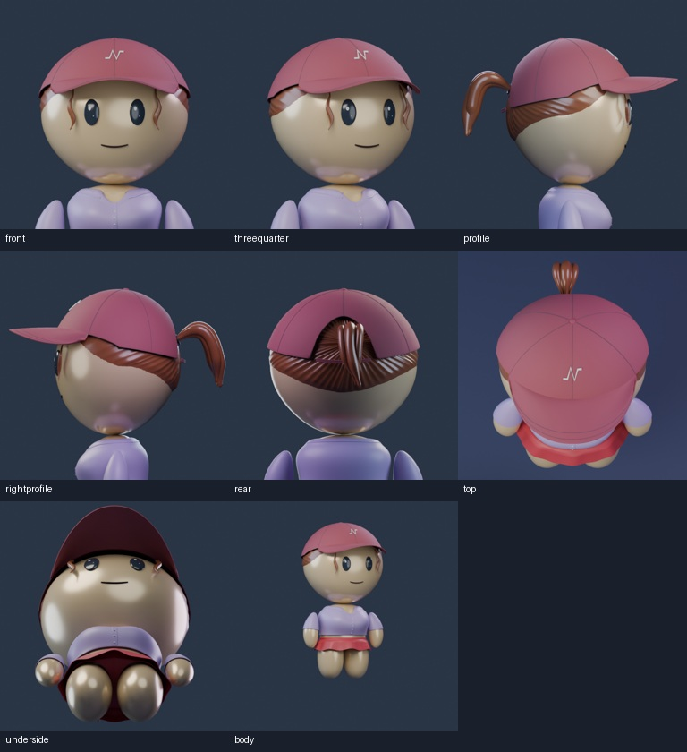
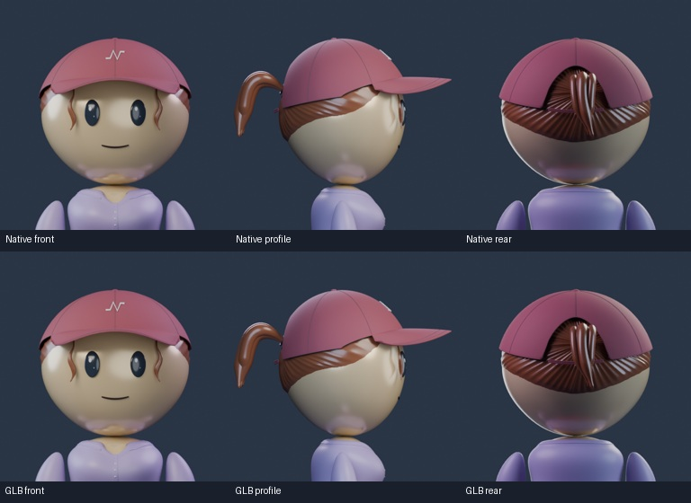
Feminine · Cap, glasses and HOT
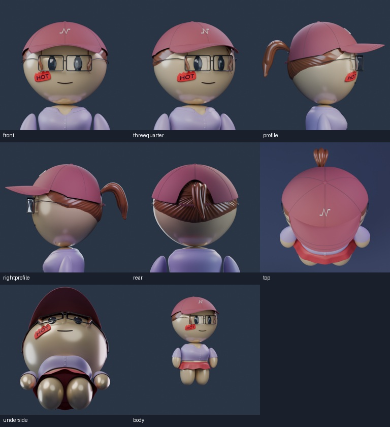
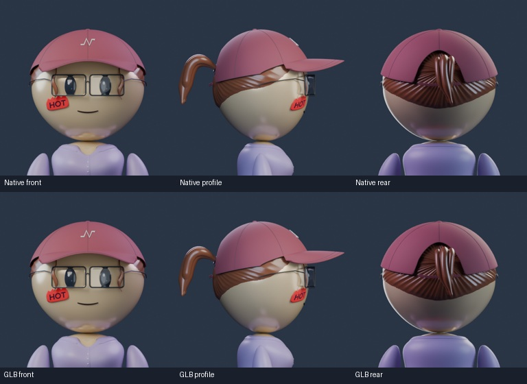
Feminine · Cap, glasses, HOT and hoodie
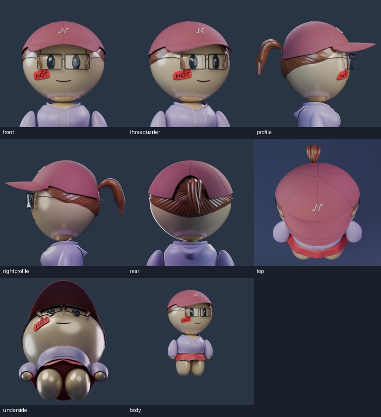
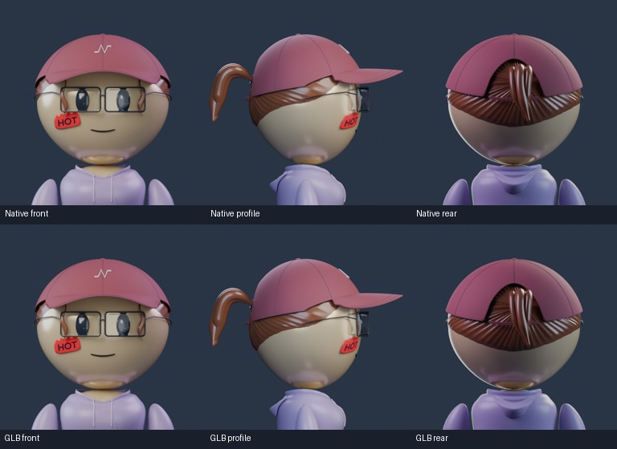
Masculine · Taper
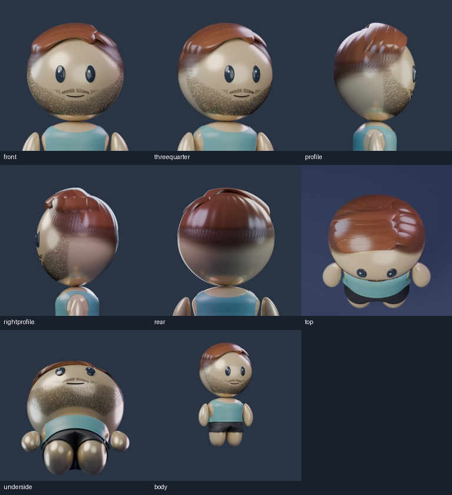
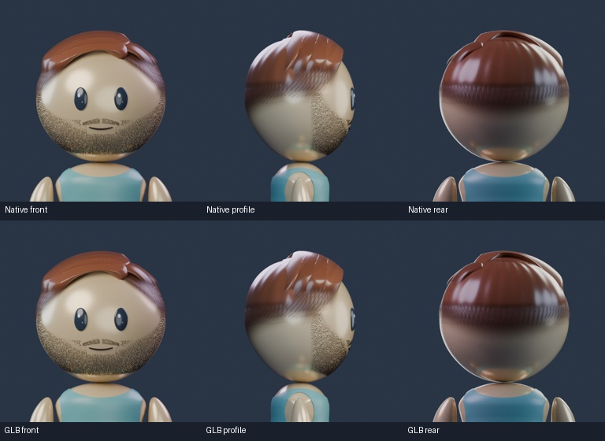
Masculine · Cap, glasses and HOT
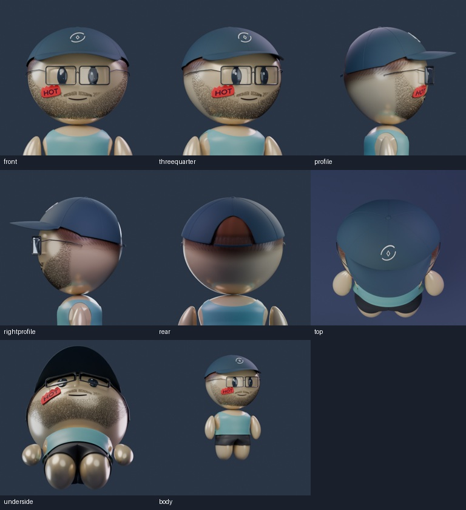
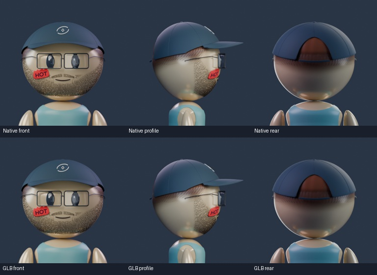
Masculine · Cap, glasses, HOT and hoodie
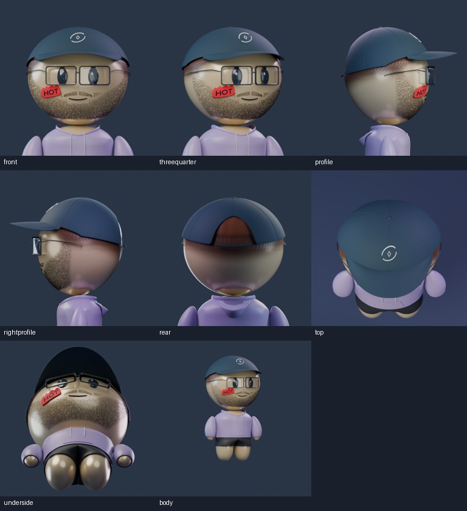
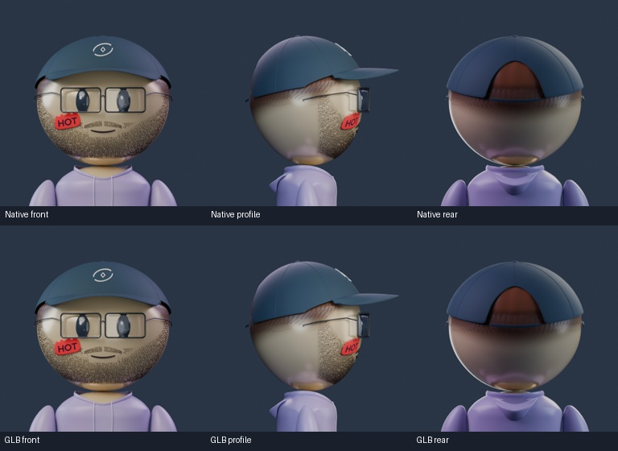